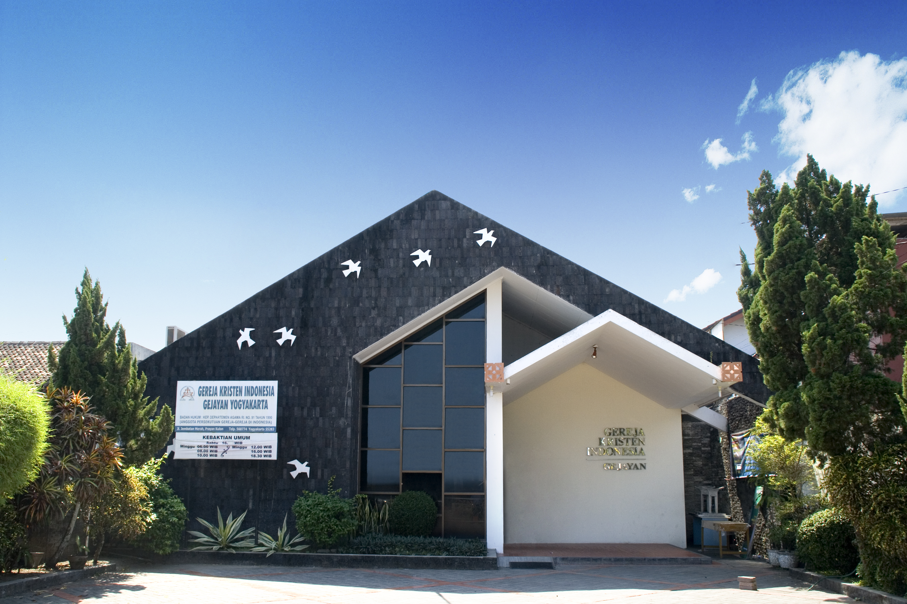
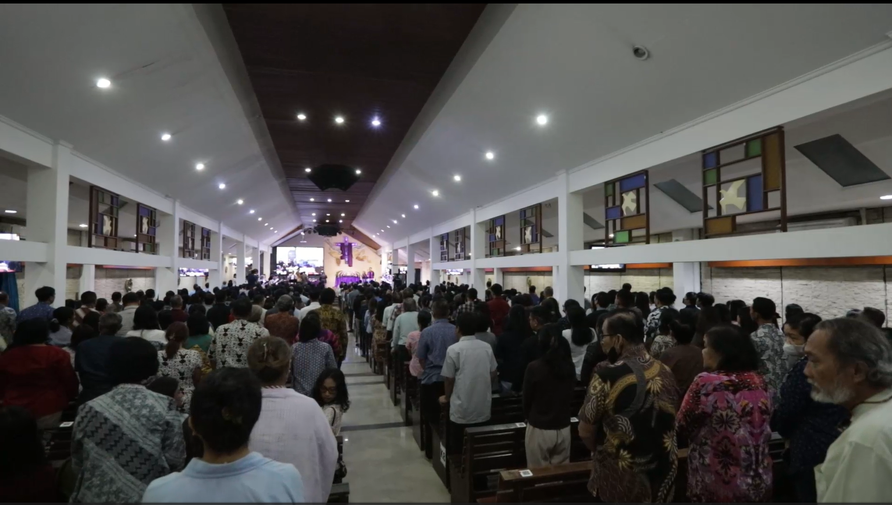

GKI Gejayan hadir sebagai saksi kasih Kristus di Yogyakarta, melayani dengan hati yang tulus untuk membawa transformasi bagi sesama.
Menjadi Komunitas anak-anak Bapa yang bertumbuh dinamis dan berdampak bagi masyarakat multikultur di Indonesia.
Membina warga jemaat GKI Gejayan agar siap menerima pengutusan Tuhan kemanapun.
Onsite & Online Streaming
Onsite - Ibadah Pagi
Onsite - Ibadah Sore